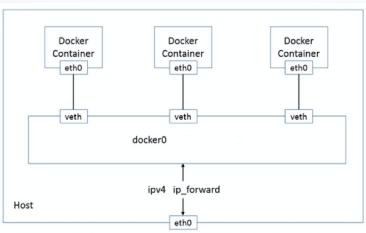
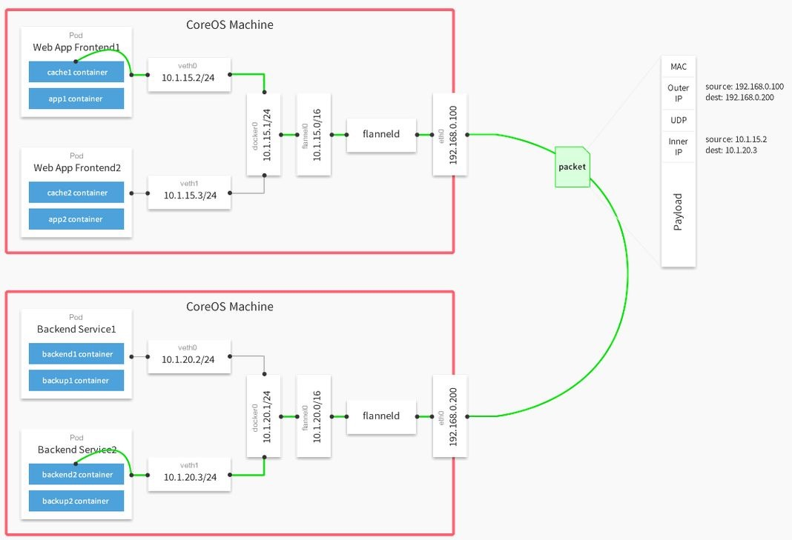

概述
- 本篇总结生产环境部署和应用 Kubernetes 最佳实践
一 网络插件选择和网络方案
1 网络插件
1.1 CNM & CNI 阵营：
- 容器网络发展到现在，形成了两大阵营，就是 Docker 的 CNM 和 Google、CoreOS、Kuberenetes 主导的 CNI。
- 首先明确一点，CNM 和 CNI 并不是网络实现，他们是网络规范和网络体系，从研发的角度他们就是一堆接口，你底层是用 Flannel 也好、用 Calico 也好，他们并不关心，CNM 和 CNI 关心的是网络管理的问题。
-
- CNM (Container Network Model)
-
- CNI（Container Network Interface）
1.2 Kubernetes 网络设计原则
首先我们得先了解 Kubernetes 网络的设计原则，然后才能更好的理解 flannel 网络的应用 Kubernetes 网络设计模型：
- 在 Kubernetes 网络中存在两种 IP（Pod IP 和 Service Cluster IP）, Pod IP 地址是实际存在于某个网卡(可以是虚拟设备)上的，Service Cluster IP 它是一个虚拟 IP，是由 kube-proxy 使用 Iptables 规则重新定向到其本地端口，再均衡到后端 Pod 的。
- 基本原则：
-
- 每个 Pod 都拥有一个独立的 IP 地址（IP per Pod），而且假定所有的 pod 都在一个可以直接连通的、扁平的网络空间中。
- 设计原因：
-
- 用户不需要额外考虑如何建立 Pod 之间的连接，也不需要考虑将容器端口映射到主机端口等问题。
- 网络要求：
-
- 所有的容器都可以在不用 NAT 的方式下同别的容器通讯；
-
- 所有节点(Node)都可在不用 NAT 的方式下同所有容器通讯；
-
- 容器自己看到的 IP 和别人看到的 IP 是同一个地址。
1.3 Kubernetes 网络主要解决以下网络通信问题:
- 同一 pod 下容器与容器的通信；
- 同一节点下不同的 pod 之间的容器间通信；
- 不同节点下容器之间的通信；
- 集群外部与内部组件的通信；
- pod 与 service 之间的通信；
A 同一 Pod 下容器与容器的通信
同一个 Pod 的容器共享同一个网络命名空间，它们之间的访问可以用 localhost 地址 + 容器端口就可以访问。
B 同一 Node 下，不同 Pod 之间的通信

C 不同 Node 下，不同 Pod 之间的通信
D 集群外部与内部组件的通信
E Pod 和 Service 之间的通信
2 LB 方案
3 网络插件之 Flanel

-
Flannel 首先创建了一个名为 flannel0 的网桥，而且这个网桥的一端连接 docker0 的网桥，另一端连接一个名为 flanneld 的服务进程。
-
Flanneld 进程并不简单，它首先上连 etcd，利用 etcd 来管理可分配的 IP 地址段资源，同时监控 etcd 中每个 Pod 的实际地址，并在内存中建立了一个 Pod 节点路由表；然后下连 docker0 和物理网络，使用内存中的 Pod 节点路由表，将 docker0 发给它的数据包包装起来，利用物理网络的连接将数据包投递到目标 flanneld 上，从而完成 pod 到 pod 之间的直接的地址通信。
-
Flannel 之间的底层通信协议的可选余地有很多，比如 UDP、VXlan、AWS VPC 等等。只要能通到对端的 Flannel 就可以了。源 Flannel 封包，目标 Flannel 解包，最终 docker0 看到的就是原始的数据，非常透明，根本感觉不到中间 Flannel 的存在。
-
Flannel 的安装配置网上讲的很多，在这里就不在赘述了。在这里注意一点，就是 flannel 使用 etcd 作为数据库，所以需要预先安装好 etcd。
下面说说几个场景：
- 1 同一 Pod 内的网络通信。在同一个 Pod 内的容器共享同一个网络命名空间，共享同一个 Linux 协议栈。所以对于网络的各类操作，就和它们在同一台机器上一样，它们可以用 localhost 地址直接访问彼此的端口。其实这和传统的一组普通程序运行的环境是完全一样的，传统的程序不需要针对网络做特别的修改就可以移植了。这样做的结果是简单、安全和高效，也能减少将已经存在的程序从物理机或者虚拟机移植到容器下运行的难度。
- 2 Pod1 到 Pod2 的网络，分两种情况。Pod1 与 Pod2 不在同一台主机与 Pod1 与 Pod2 在同一台主机。
-
- 2.1 先说 Pod1 与 Pod2 不在同一台主机。Pod 的地址是与 docker0 在同一个网段的，但 docker0 网段与宿主机网卡是两个完全不同的 IP 网段，并且不同 Node 之间的通信只能通过宿主机的物理网卡进行。将 Pod 的 IP 和所在 Node 的 IP 关联起来，通过这个关联让 Pod 可以互相访问。
-
- 2.2 Pod1 与 Pod2 在同一台主机。Pod1 和 Pod2 在同一台主机的话，由 Docker0 网桥直接转发请求到 Pod2，不需要经过 Flannel。
-
3 Pod 到 Service 的网络。创建一个 Service 时，相应会创建一个指向这个 Service 的域名，域名规则为{服务名}.{namespace}.svc.{集群名称}。之前 Service IP 的转发由 iptables 和 kube-proxy 负责，目前基于性能考虑，全部为 iptables 维护和转发。iptables 则由 kubelet 维护。Service 仅支持 UDP 和 TCP 协议，所以像 ping 的 ICMP 协议是用不了的，所以无法 ping 通 Service IP。
- 4 Pod 到外网。Pod 向外网发送请求，查找路由表, 转发数据包到宿主机的网卡，宿主网卡完成路由选择后，iptables 执行 Masquerade，把源 IP 更改为宿主网卡的 IP，然后向外网服务器发送请求。
- 5 集群外部访问 Pod 或 Service 由于 Pod 和 Service 是 Kubernetes 集群范围内的虚拟概念，所以集群外的客户端系统无法通过 Pod 的 IP 地址或者 Service 的虚拟 IP 地址和虚拟端口号访问到它们。为了让外部客户端可以访问这些服务，可以将 Pod 或 Service 的端口号映射到宿主机，以使得客户端应用能够通过物理机访问容器应用。
总结：
Flannel 实现了对 Kubernetes 网络的支持，但是它引入了多个网络组件，在网络通信时需要转到 flannel0 网络接口，再转到用户态的 flanneld 程序，到对端后还需要走这个过程的反过程，所以也会引入一些网络的时延损耗。另外 Flannel 默认的底层通信协议是 UDP。UDP 本身是非可靠协议，虽然两端的 TCP 实现了可靠传输，但在大流量、高并发应用场景下还需要反复调试，确保不会出现传输质量的问题。特别是对网络依赖重的应用，需要评估对业务的影响。
4 网络插件之 Calico
二 存储方案

| 对比项 | 块存储 EBS | 文件存储 NAS | 对象存储 TOS |
|---|---|---|---|
| 使用方式 | 像使用传统服务器硬盘一样，用户可以对挂载到 ECS 上的块存储（硬盘）做格式化、创建文件系统等操作。 | 符合标准文件协议，用户可以将文件系统挂载给 ECS，像使用本地文件目录一样。 | 具备标准 Restful API 接口，用户可以通过编程或第三方工具访问对象存储。 |
| 共享方式 | 数据不共享，或特殊的数台服务器共享卷，每台服务器使用独立的块存储（硬盘），多服务器之间数据隔离。 | 数据共享，支持多台服务器共享，多台服务器可挂载相同的文件系统，数据可以共享操作和访问。 | 数据共享，设备无限制，服务器、嵌入式设备、IoT 设备，所有调用相同路径，均可访问共享的对象存储数据。 |
| 场景对比 | 关系数据库、NoSQL 数据库、ELK 分布式日志搜索、企业办公应用、数据仓库、高性能计算等场景。 | 企业办公 OA、AI 训练、门户网站、游戏、DevOps、容器微服务、渲染等场景。 | 互联网应用、OTT 视频、视频监控、备份/归档、大数据/IoT 等场景。 |
三 监控和告警方案
四 用户权限管理
五 Kubernetes 组件应用实践
诸如 namespace、deployment、configmap、scret、
1 生产环境 Deployment 全注释
-
查看官方说明, 除了官方文档, 还可以使用 kubectl explain 命令
[root@k8s-master ~]# kubectl explain pod.spec.terminationGracePeriodSeconds
KIND: Pod
VERSION: v1
FIELD: terminationGracePeriodSeconds <integer>
DESCRIPTION:
Optional duration in seconds the pod needs to terminate gracefully. May be
decreased in delete request. Value must be non-negative integer. The value
zero indicates stop immediately via the kill signal (no opportunity to shut
down). If this value is nil, the default grace period will be used instead.
The grace period is the duration in seconds after the processes running in
the pod are sent a termination signal and the time when the processes are
forcibly halted with a kill signal. Set this value longer than the expected
cleanup time for your process. Defaults to 30 seconds.
案例 A
apiVersion: extensions/v1beta1
kind: Deployment
metadata:
annotations:#注释
deployment.kubernetes.io/revision: "1"
creationTimestamp: "2022-07-04T13:29:55Z"
generation: 1
labels:#该Deployment本身的label
GCE_CLUSTER: wuhan
name: dp-2e2d83bae2
psm: your.test.hello
name: dp-2e2d83bae2
namespace: ues-workers
ownerReferences:
- apiVersion: you.yourdomain.org/v1alpha2
blockOwnerDeletion: true
controller: true
kind: Task
name: task-vsh8z
uid: 647e19e5-fb9d-11ec-a7fb-fa163edec582
resourceVersion: "95427195"
selfLink: /apis/extensions/v1beta1/namespaces/ues-workers/deployments/dp-2e2d83bae2
uid: 6480217a-fb9d-11ec-a7fb-fa163edec582
spec:
minReadySeconds: 10 #最少启动10秒,才认为他是Ready
progressDeadlineSeconds: 600 #Deployment 控制器在（通过 Deployment 状态） 标示 Deployment 进展停滞之前，需要等待所给的时长。 单位秒。
replicas: 1 #副本数,1
revisionHistoryLimit: 3 #历史版本保留几个, 用于回滚deployment。如果设置为0，则表示不保存历史版本. 默认是保留所有历史版本.
selector:
matchLabels:
cluster_id: "2300"
name: dp-2e2d83bae2
paas_cluster: wuhan
psm: your.test.hello
service_id: "181"
strategy:
rollingUpdate:
maxSurge: 25%
maxUnavailable: 25%
type: RollingUpdate
template:
metadata:
annotations:
deployment.gce.kubernetes.io/requestCpuUserDemand: 100m
deployment.gce.kubernetes.io/requestMemUserDemand: 102Mi
image_version: 1.0.0.4
creationTimestamp: null
labels:
cluster_id: "2300"
name: dp-2e2d83bae2
paas_cluster: wuhan
psm: your.test.hello
service_id: "181"
spec:
containers:
- env:
- name: API_MANAGER_ADDR
- name: BIND_IF
value: eth0
- name: CONSUL_HTTP_HOST
value: 127.0.0.1
- name: ENABLE_CONSUL
value: "True"
- name: IS_DOCKER_ENV
value: "true"
- name: IS_EDGE_ENVIRONMENT
value: "1"
- name: IS_PORT_ENV
value: "1"
- name: IS_READY_CHECK
value: "1"
- name: MY_CPU_LIMIT
valueFrom:
resourceFieldRef:
containerName: dp-2e2d83bae2
divisor: "0"
resource: limits.cpu
- name: MY_CPU_REQUEST
valueFrom:
resourceFieldRef:
containerName: dp-2e2d83bae2
divisor: "0"
resource: requests.cpu
- name: MY_HOST_IP
valueFrom:
fieldRef:
apiVersion: v1
fieldPath: status.hostIP
- name: MY_MEM_LIMIT
valueFrom:
resourceFieldRef:
containerName: dp-2e2d83bae2
divisor: "0"
resource: limits.memory
- name: MY_MEM_REQUEST
valueFrom:
resourceFieldRef:
containerName: dp-2e2d83bae2
divisor: "0"
resource: requests.memory
- name: MY_POD_IP
valueFrom:
fieldRef:
apiVersion: v1
fieldPath: status.podIP
- name: MY_POD_NAME
valueFrom:
fieldRef:
apiVersion: v1
fieldPath: metadata.name
- name: MY_POD_NAMESPACE
valueFrom:
fieldRef:
apiVersion: v1
fieldPath: metadata.namespace
- name: NET_WORK_MODE
value: "1"
- name: REGION
value: China-Edge
- name: RUNTIME_IDC_NAME
value: uploadagwh
- name: GCE_CLUSTER
value: wuhan
- name: GCE_CLUSTER_ID
value: "2300"
- name: GCE_CONTAINER_NAME
value: dp-2e2d83bae2
- name: GCE_ENV
value: prod
- name: GCE_HOST_ENV
value: online
- name: GCE_INSTANCE_WEIGHT
value: "10"
- name: GCE_LOGICAL_CLUSTER
value: wuhan
- name: GCE_PHYSICAL_CLUSTER
value: uploadagwh
- name: GCE_PORTS
- name: GCE_PSM
value: your.test.hello
- name: GCE_PSM_OWNER
value: your.yzy
- name: GCE_STAGE
value: all_dc
lifecycle: #container生命周期钩子, 有poststart和preStop
preStop:
exec:
# SIGTERM triggers a quick exit; gracefully terminate instead
command: ["/usr/sbin/nginx","-s","quit"]
image: hub.yourdomain.com/project/cm_hello:b0748cc264e1756b2dd3226e5e39f1ce
imagePullPolicy: IfNotPresent
name: dp-2e2d83bae2
resources:
limits:
cpu: 100m
memory: 102Mi
requests:
cpu: 100m
memory: 102Mi
terminationMessagePath: /dev/termination-log
terminationMessagePolicy: File #默认值是File, 表明terminationMessage只能从特定文件获取. 该选项也可以设置为'FallbackToLogsOnError', 表明让Kubernetes去Container日志文件里去找terminationMessage, 那么具体是啥位置呢?就是Container对应日志文件的最后一个Chunk.
volumeMounts:
- name: sys-resolv-conf
mountPath: /etc/resolv.conf
mountPropagation: HostToContainer
readOnly: true
hostNetwork: true #默认为false. 当pod 设置hostNetwork: true时候，Pod中的所有容器就直接暴露在宿主机的网络环境中，这时候，Pod的PodIP就是其所在Node的IP。对于同Deployment下的hostNetwork: true启动的Pod，每个node上只能启动一个。也就是说，Host模式的Pod启动副本数不可以多于“目标node”的数量，
dnsPolicy: ClusterFirstWithHostNet # 如果未明确指定 dnsPolicy，则使用 "ClusterFirst". 如果没有以hostNetwork 方式运行的 Pod, 其实设置了 ClusterFirstWithHostNet后也会回退到ClusterFirst.
restartPolicy: Always
schedulerName: default-scheduler #如果默认的调度器不满足要求，还可以部署自定义的调度器。并且，在整个集群中还可以同时运行多个调度器实例，通过 pod.Spec.schedulerName 来选择使用哪一个调度器（默认使用内置的调度器）
securityContext: {}
terminationGracePeriodSeconds: 30 #向容器进程发送KILL信号之前的等待时间. 首先运行preStop勾子, 然后向容器发送停止命令(比如docker stop xxxx), 然后等待一段时间后, 发送SIGKILL信号、强制关闭. 运行preStop勾子 + docker stop是串行的, 并且时间加在一起不能超过terminationGracePeriodSeconds.
volumes:
- name: sys-resolv-conf
hostPath:
path: /etc/resolv.conf
type: FileOrCreate
status:
availableReplicas: 1
conditions:
- lastTransitionTime: "2022-07-04T13:29:55Z"
lastUpdateTime: "2022-07-04T13:30:15Z"
message: ReplicaSet "dp-2e2d83bae2-7fd8bdbfd8" has successfully progressed.
reason: NewReplicaSetAvailable
status: "True"
type: Progressing
- lastTransitionTime: "2022-11-17T09:40:24Z"
lastUpdateTime: "2022-11-17T09:40:24Z"
message: Deployment has minimum availability.
reason: MinimumReplicasAvailable
status: "True"
type: Available
observedGeneration: 1
readyReplicas: 1
replicas: 1
updatedReplicas: 1
2 生产环境 Docker 日志最佳实践
- 在默认情况下 Docker 容器的日志会输出到一个 json-file 文件中，容器输出到 stdout 和 stderr 的内容加上时间戳会被记录到宿主机。
- 这些日志文件在宿主机的 /var/lib/docker/containers/ 文件夹下，以这样的形式命名：
/var/lib/docker/containers/<container id>/<container id>-json.log
2.1 限制 Docker 容器日志大小
- A 修改 Docker 配置 vi /etc/docker/daemon.json
{
"log-driver": "json-file",
"log-opts": {"max-size": "100m", "max-file": "5"}
}
- B 或者命令行：
docker run --log-opt max-size=10m --log-opt max-file=5 my-app:latest
2.2 Docker 日志策略和最佳实践
A 通过应用自己管理日志
应用自己去管理自己的日志，比如使用 Logging Framework，在 Java 中通常使用 log4j 将日志打印到一个远端的中心化地方，这样就可以绕过 Docker 和操作系统。这种方式给予了开发者更多的控制权。 为了保存日志数据，你可以配置一个持久化的存储或将日志转发到一个远程日志的系统，比如 Elastic Stack 或 Sematext Cloud，但是基于应用的日志框架存在的问题便是如果部署了多个容器，那么你需要一个方式来告诉日志系统，哪些日志属于哪个容器。
B 通过 Data Volumes 记录日志
你可以在容器内部创建一个目录，然后将该目录挂载到宿主机上，那么一些长期或共享使用的数据可以长久的存储。你可以复制，备份，或者从其他容器访问这些数据。也可以在多个容器之间共享这些 volume。 但是使用 Data Volume 存在的问题是，很难将这些容器迁移到其他宿主机而不丢失数据。
C 通过 Docker Logging Driver 记录日志
- 在 Docker 下，另外一个记录日志的方式是使用 logging drivers。不像 Data Volumes, Docker logging driver 会从容器的 stdout 和 stderr 输出中直接读取数据。默认的配置会将这些日志记录到宿主机的一个文件中，但是改变 logging driver 可以允许你将事件转发给 syslog, gelf, journald 或其他 endpoints。
-
因为容器不再需要读写日志文件，可以提升一定的性能。但是也有一些弊端，
Docker log命令只能在 json-file log driver 下使用；log diver 有一些功能限制，日志文件只能被传输而不能被解析；当 TCP 服务不可达时，容器会 shut down。 -
Docker Logging Driver 之
json-file和syslog区别: -
json-file模式开销小, 但不支持多行消息.
-
syslog模式开销大, 但支持多行消息.
Logging Driver 选项
选项解释：
- logagent：这是一个通用的 log shipper，Logagent Docker image 是一个提前配置好 Log 收集的镜像，Logagent 不仅会收集日志，还会收集诸如镜像名字，容器 ID，容器名字，Swarm service 等 meta-data 或 Kubernetes meta-data。并且它可以处理多行日志，可以解析容器的日志等等
- syslog: 将日志转发到 syslog 服务
- journald:将容器日志发送到 systemd journal
- fluentd: 将日志信息发送到 Fluentd 收集器
- elf：将容器的日志写到 Graylog Extended Log Format(GELF) 端，比如 GrayLog 或 Logstash
- awslogs：将日志发送到 AWS CloudWatch Logs
- splunk：通过 HTTP Event Collector（HEC）将日志写到 Splunk
- cplogs：将日志发送到 Google Cloud Platform（GCP）Logging
- logentries: 将日志写到 Rapid7 Logentries
- etwlogs: 将日志写到 Event Tracing for Windows（ETW）
D 使用专用的日志容器记录日志
另一个解决方案是通过一个专用的、独立的日志容器来记录和收集日志，这非常适用于微服务架构。这个优势在于这完全不依赖与宿主机。相反，专用的日志容器可以允许你在 Docker 的环境中管理日志文件。他会自动从其他容器收集日志，监控，分析，并且将他们转存到一个中心存储上。 这种方式使得我们可以轻易地将容器在不同的宿主机中移动，并且可以非常轻松的扩展日志基础设施，只需要增加日志容器即可。
E Logging Using the Sidecar Approach(使用日志 Sidecar)
和专用的日志容器类似，使用日志容器，但是不同点在于，每一个应用容器都有专用的日志容器，允许你对每一个应用的日志进行自定义。第一个容器会将日志文件打印到 volume，然后日志文件会日志容器打上标签，然后再被传送到日志管理系统。 使用 sidecar 的一个主要的优势是，你可以为每一个 log 增加额外自定义的标签，可以更好地确定其来源。 同样也有一些劣势，设置或扩容可能会变得非常复杂和困难，并且需要更多的资源。你需要确保应用容器和 sidecar 容器是一起进行工作的，否则可能会造成数据丢失。
2 生产环境 ServiceAccount 和 Secret 全注释
# kubectl get serviceaccount prometheus -o yaml -n monitoring
apiVersion: v1
kind: ServiceAccount
metadata:
annotations:
meta.helm.sh/release-name: edge-monitor
meta.helm.sh/release-namespace: default
creationTimestamp: "2022-03-17T08:28:27Z"
labels:
app.kubernetes.io/managed-by: Helm
name: prometheus
namespace: monitoring
resourceVersion: "1822"
selfLink: /api/v1/namespaces/monitoring/serviceaccounts/prometheus
uid: 384e441e-a5cc-11ec-a7fb-fa163edec582
secrets:
- name: prometheus-token-nk6ns #该ServiceAccount绑定的Secret
# kubectl get secret prometheus-token-nk6ns -o yaml -n monitoring
apiVersion: v1
kind: Secret
metadata:
annotations:
kubernetes.io/service-account.name: prometheus
kubernetes.io/service-account.uid: 384e441e-a5cc-11ec-a7fb-fa163edec582
creationTimestamp: "2022-03-17T08:28:27Z"
name: prometheus-token-nk6ns
namespace: monitoring
resourceVersion: "1818"
selfLink: /api/v1/namespaces/monitoring/secrets/prometheus-token-nk6ns
uid: 384f2f5f-a5cc-11ec-a8a9-fa163eb4a930
type: kubernetes.io/service-account-token # Secret有3种类型, ServiceAccount、Opaque 、Docker工厂认证信息
data: #ServiceAccount类型的Secret就有证书和token
ca.crt: XXXXXXXXXX
namespace: bW9uaXRvcmluZw==
token: XXXXXXX
3 生产环境 DaemonSet 全注释
# kubectl get daemonset edge-agent -n edge-agent -o yaml
apiVersion: extensions/v1beta1
kind: DaemonSet
metadata:
annotations:
meta.helm.sh/release-name: edge-agent
meta.helm.sh/release-namespace: default
creationTimestamp: "2022-08-03T02:47:04Z"
generation: 2
labels:
app.kubernetes.io/managed-by: Helm
name: edge-agent
namespace: edge-agent
resourceVersion: "112753741"
selfLink: /apis/extensions/v1beta1/namespaces/edge-agent/daemonsets/edge-agent
uid: 8e75c2cf-12d6-11ed-ae3f-fa163e3fb8c4
spec:
revisionHistoryLimit: 10
selector:
matchLabels:
app: agent
template:
metadata:
creationTimestamp: null
labels:
app: agent
spec:
containers:
- command:
- /opt/www/your_agent/bin/yourdomain.agent
image: hub.youdomain.org/your_agent/yourdomain_agent:v1.0.3
imagePullPolicy: IfNotPresent
name: edge-agent
resources:
limits:
cpu: 500m
memory: 512Mi
requests:
cpu: 500m
memory: 512Mi
securityContext: #表示进程以root权限运行
privileged: true
terminationMessagePath: /dev/termination-log
terminationMessagePolicy: File
volumeMounts:
- mountPath: /opt/tmp
name: metrics
- mountPath: /appstore/app/kubernetes/log
name: k8s-log
- mountPath: /data00/www/gce/containers
name: containers
- mountPath: /var/log
name: agent-log
- mountPath: /opt/www/edge_agent/etc/conf.yaml
name: config
subPath: conf.yaml
dnsPolicy: ClusterFirst
restartPolicy: Always
schedulerName: default-scheduler
securityContext: {}
terminationGracePeriodSeconds: 30
tolerations: #容忍度配置, 表示它可以调度到Master节点上.
- effect: NoSchedule
key: node-role.kubernetes.io/master
operator: Exists
volumes:
- hostPath:
path: /opt/tmp
type: DirectoryOrCreate
name: metrics
- configMap:
defaultMode: 420
name: clean-log-path
name: config
- hostPath:
path: /appstore/app/kubernetes/log
type: DirectoryOrCreate
name: k8s-log
- hostPath:
path: /data00/www/gce/containers
type: DirectoryOrCreate
name: containers
- hostPath:
path: /var/log
type: DirectoryOrCreate
name: agent-log
templateGeneration: 2 #新版本已经不推荐
updateStrategy:
rollingUpdate:
maxUnavailable: 100%
type: RollingUpdate
status:
currentNumberScheduled: 24
desiredNumberScheduled: 24
numberAvailable: 24
numberMisscheduled: 0
numberReady: 24
observedGeneration: 2
updatedNumberScheduled: 24